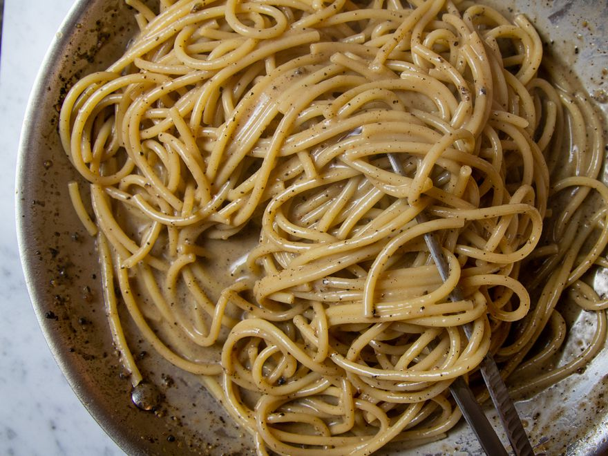

Cacio e Pepe

Description
The Roman pasta dish cacio e pepe is as easy to make as it is delicious. I find cacio e pepe is tastiest when eaten straight out of the skillet, and that the best bites are the first two or three you take on the way to the table.
Ingredients
- 4 tablespoons (60ml) extra-virgin olive oil, divided
- 1 teaspoon coarsely ground black pepper, to taste
- Kosher salt, to taste
- 1/2 pound (225g) spaghetti
- 2 tablespoons (30g) unsalted butter
- 2 ounces Pecorino Romano cheese (about 1 cup; 55g), very finely grated on a Microplane or the smallest holes of a box grater, plus more for serving
Steps
- Heat 3 tablespoons olive oil and about a teaspoon of black pepper in a medium skillet over medium-low heat until ingredients are fragrant and pepper is barely starting to sizzle, about 1 minute. Set aside.
- Place spaghetti in a large skillet and cover with water. Season with a small pinch of salt, then bring to a boil over high heat, prodding spaghetti occasionally with a fork or wooden spoon to prevent it from clumping. Cook until spaghetti is al dente (typically about 1 minute less than the package recommends). Transfer 2 to 3 tablespoons of pasta cooking water to the skillet with the olive oil/pepper mixture. Stir in butter. Using tongs, lift spaghetti and transfer it to the oil/butter mixture.
- Add cheese and remaining tablespoon olive oil to the skillet and stir with a fork until cheese is completely melted. Add a few more tablespoons of pasta water to the skillet to adjust consistency, reheating as necessary until the sauce is creamy and coats each strand of spaghetti. Season to taste with salt and more black pepper. Serve immediately, passing extra grated cheese and black pepper at the table.